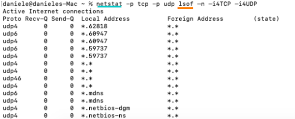

netstat
Check the listening ports and current connections on a host
To do that we can use the
netstat utility available in: Linux, Windows, *unix(es:OSX)
on
Linux
:
OPTIONS:
-t: tcp connections
-u: udp connections
-n: show numerical addresses instead of trying to determine symbolic host and ports
-p: show the PID and name of the program to which each socket belongs
-a: all sockets
on
Windows
:
OPTIONS:
-a: displays all active TCP connections and the TCP and UDP ports on which the computer is listening.
-n: displays active TCP connections, however, addresses and port numbers are expressed numerically and no attempt is made to determine names.
-o: displays active TCP connections and includes the process ID (PID) for each connection
-b: owning process name, need to be Administrator
-p <TCP/UDP> : specify protocol
on
*nix(es:OSX):
we can combine the two utility
netstat and
lsof(list open files)
OPTIONS netstat:
-p: show statistics about a protocol, in our case for TCP and UDP
OPTIONS lsof:
-n: inhibits the conversion of network numbers to host names for network files
-i4UDP: list ipv4 UDP active ports
-i4TCP: list ipv4 TCP active ports